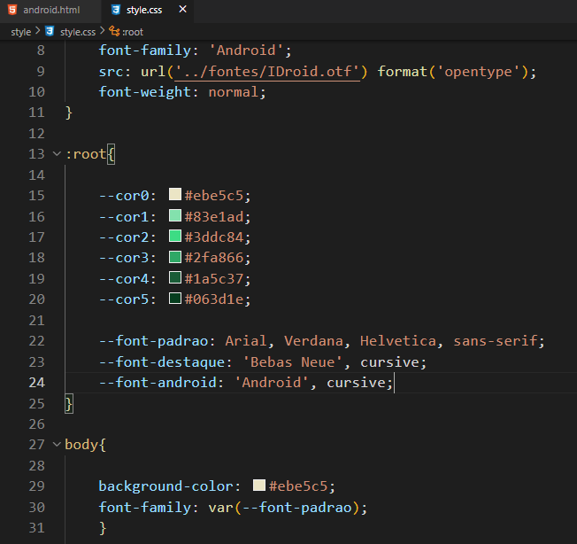

Criando váriaveis em CSS
- Para criarmos váriaveis em CSS, devemos usar o Root, váriaveis serve para salvarmos elementos com determinados nomes e quando necessário utilizar esses elementos, para não precisar ficar a todo momento procurando o código do elemento.
- Váriaveis pode conter cores, fontes e se por um acaso o cliente solicitar uma troca de cor em determinados campos, utilizando as váriaveis o processo é facilitado
- Segue o exemplo da imagem abaixo de como devemos usar váriaveis dentro de um :Root
